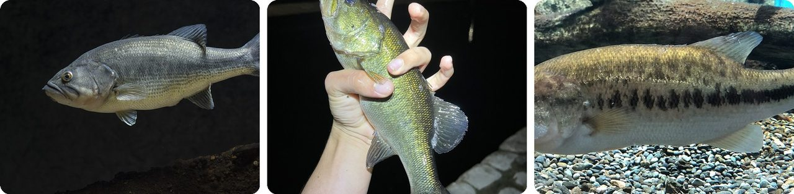
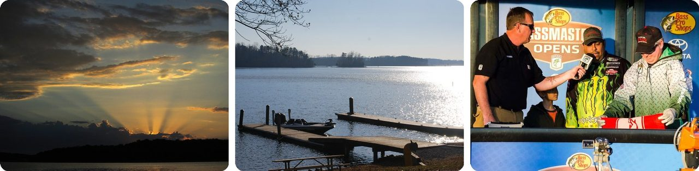
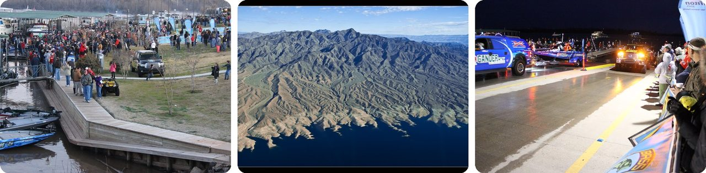
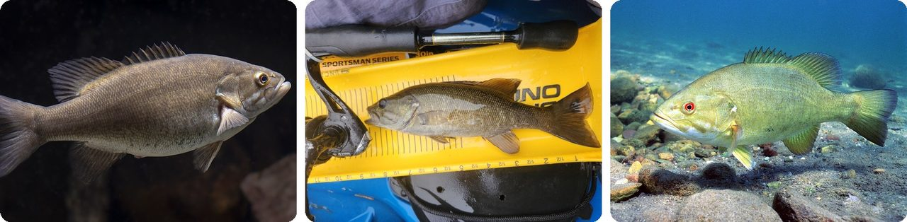
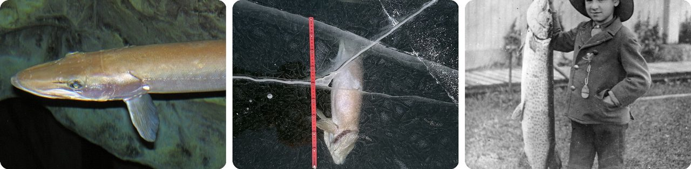
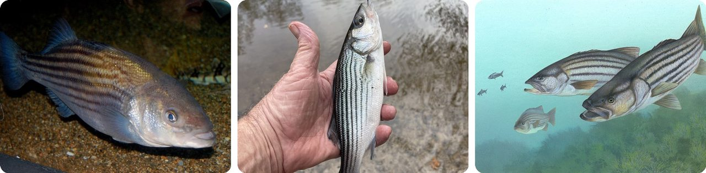
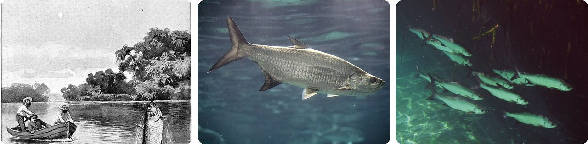
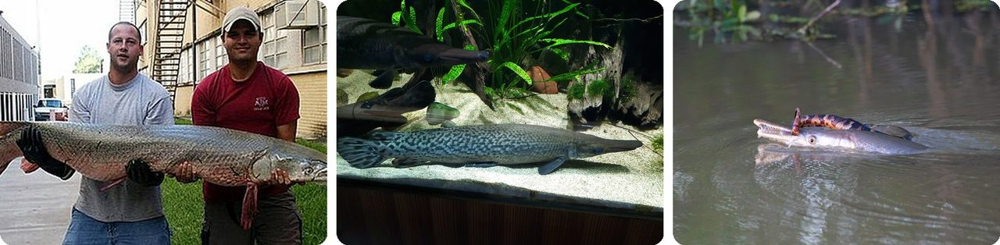
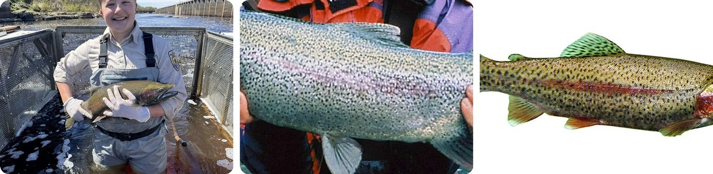
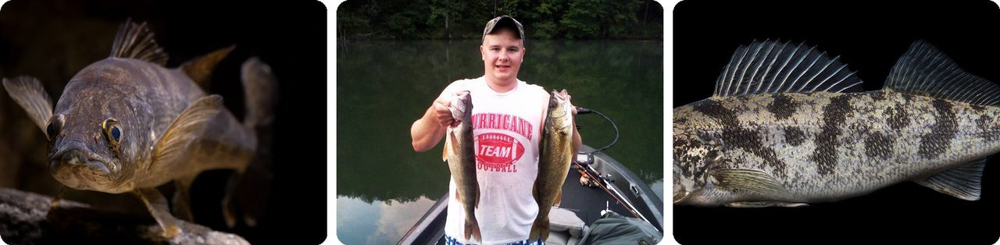

🌍 Top 10 American Game Fish and Bass Fishing Stories
Oct 2, 2026
1. 🇺🇸 The largemouth bass world record is a tie, 77 years apart

On June 2, 1932, George Perry pulled a largemouth bass out of Montgomery Lake in Georgia. It weighed 22 lb 4 oz (10.09 kg), about as much as a big Thanksgiving turkey. Nobody beat it for decades.
Then on July 2, 2009, Manabu Kurita caught one in Lake Biwa, Japan, that weighed 22 lb 5 oz. That's one ounce more.
Here's the catch. The International Game Fish Association, which keeps the official records, says a new record has to beat the old one by at least 2 ounces. So the two men now share it.
Basically, it's a photo finish decided by the weight of a slice of bread.
2. 🇺🇸 Pro bass fishing started with 106 anglers in Arkansas

In 1967, Ray Scott, a man from Montgomery, Alabama, had a big idea: make bass fishing a real competitive sport. He started the Bass Anglers Sportsman Society, or B.A.S.S.
That June, he held the first tournament on Beaver Lake, Arkansas. 106 anglers from 13 states each paid a $100 entry fee for a shot at $2,000 and a trip to Acapulco. A man named Stan Sloan won.
Scott went on to create the first national tournament circuit, a magazine and a TV show. B.A.S.S. now has more than half a million members, and Scott is called the "godfather" of modern bass fishing.
Think of it as the day a weekend hobby got a scoreboard.
3. 🇺🇸 The first Bassmaster Classic anglers didn't know where they were going

The Bassmaster Classic is the world championship of bass fishing. When Ray Scott held the first one in 1971, he kept the location secret, even from the competitors.
The anglers only found out once they were on a plane headed for Las Vegas. The lake was Lake Mead, Nevada. Scott kept up this "mystery lake" trick through 1976, then started announcing the site so fans could come and watch.
The prize has grown too, from $10,000 in 1971 to $500,000 in 2006. Today every fish is released, and it has to be alive at the weigh-in, or the angler gets a penalty.
It's a surprise party where the guests bring fishing rods.
4. 🇺🇸 The smallmouth bass world record has stood since 1955

Old fishing journals called the smallmouth bass "ounce for ounce and pound for pound the gamest fish that swims." "Gamest" means it fights the hardest once it's hooked, often thrashing right at the surface.
The world record is 11 lb 15 oz (5.41 kg), caught by David Hayes in 1955 in Dale Hollow Reservoir, on the Kentucky–Tennessee border. More than 70 years later, nobody has beaten it.
Most anglers don't even keep smallmouth to eat. They catch them for the fight and let them go.
In other words, it's the lightweight boxer of fresh water.
5. 🇺🇸 The muskie's name means "ugly pike," and it eats ducks

The muskellunge, or muskie, gets its name from the Ojibwe word maashkinoozhe, meaning "ugly pike." Before English settled on "muskellunge," people used at least 94 other names for it.
It's an ambush hunter: it waits, strikes fast, then swallows its prey headfirst. It's the top predator in any lake it lives in, and besides fish it'll grab muskrats, mice, frogs and even ducks.
The biggest one on record was caught by Cal Johnson in 1949 at Lac Courte Oreilles, near Hayward, Wisconsin. It weighed 67 lb 8 oz (30.5 kg) and was about 5 ft long, as long as a short adult is tall.
Picture a fish that treats a duck like a snack.
6. 🇺🇸 The record striped bass had another angler's hook in its mouth

On the night of August 4, 2011, Gregory Myerson was fishing in Long Island Sound off Westbrook, Connecticut. A striped bass grabbed his live eel bait, and he fought it for 20 minutes.
It weighed 81 lb 14 oz (37.14 kg), about as much as a big Labrador retriever, and it's the all-tackle world record. When he got it into the boat, there was a second hook and line already in its mouth. Someone else had hooked the same fish and lost it.
Stripers normally live in the sea and swim up rivers to lay eggs. When dams went up on South Carolina's Santee-Cooper rivers, some got trapped in the new lakes and adapted to living in fresh water full-time.
It's the fish-world version of "the one that got away," except it got caught.
7. 🇺🇸 Tarpon are caught for their leaps, not their meat

Tarpon, nicknamed the "silver king," cruise the warm coasts of Florida, the Gulf of Mexico and the Caribbean. Anglers love them for their size and their spectacular leaps once hooked.
They're not good to eat, so few people fished them commercially. That's why scientists still know surprisingly little about where they travel.
Their bodies are odd too. A tarpon can rise to the surface and gulp air into its swim bladder (the air sac fish use to float), which works like a backup lung. A female can lay up to 12 million eggs, and newly hatched babies don't eat at all: they absorb food from the seawater through their skin.
Basically, it's a fish people chase purely for the show.
8. 🇺🇸 The alligator gar went from "trash fish" to trophy

Alligator gar belong to a group of fish that goes back more than 100 million years, to the age of dinosaurs. Adults are commonly 6 ft long and over 100 lb, and they can breathe air with a lung-like swim bladder.
For almost 50 years, state and federal agencies treated them as "trash fish" and tried to wipe them out to protect other game fish. Fishermen killed thousands.
Now the story has flipped. Oklahoma, Texas, Arkansas, Mississippi and Louisiana run regulated sport fishing for gar. Long before all this, Native Americans used its hard, armor-like scales as arrowheads.
Think of it as a dinosaur-era fish that got a second chance.
9. 🇺🇸 A steelhead is just a rainbow trout that went to sea

Steelhead and rainbow trout are the same species. The difference is lifestyle: rainbows stay in fresh water, while steelhead swim out to sea, then come back to the river where they hatched to lay eggs.
All that ocean food makes them big. A stream rainbow usually weighs 1 to 5 lb, but a steelhead can reach 20 lb, about as heavy as a packed carry-on bag.
Unlike Pacific salmon, which die after laying eggs, steelhead can make the trip more than once. But it's tough: fewer than 1 in 10 survive to spawn a second time. The steelhead is Washington's state fish.
It's the same fish, just one stayed home and one went traveling.
10. 🇺🇸 Walleye tournament winners were caught with lead weights in their fish

Walleye get their name from their glassy eyes, which have a mirror layer behind them that lets them see in dim light. Anglers chase them at night, and in Ohio, there's real money in it: Lake Erie Walleye Trail prizes can top $100,000.
On September 30, 2022, in Cleveland, the winning team's fish looked suspiciously heavy. Tournament director Jason Fischer cut them open in front of everyone and found 10 lead fishing weights plus chunks of other fish stuffed inside. They'd added about 7 lb to the catch.
The two anglers had won 9 of the last 19 tournaments. They pleaded guilty, lost a $100,000 boat and their fishing licenses for three years, and served short jail sentences.
Picture padding your suitcase with bricks to win a prize for the heaviest bag.
Fun fact
The walleye scandal wasn't the end of one cheater's troubles. In 2023, Chase Cominsky also pleaded guilty in Pennsylvania to conspiracy to commit forgery. He'd given his son two $100 bills that were really movie props, marked for film use only, to spend at a bowling alley. Fake money has its own wild history: next time, the world's boldest forgeries and counterfeits.
Photo credits (Wikimedia Commons)
- #1: Largemouth Bass (Micropterus salmoides) June 2023.jpg by USFWS Mountain Prairie, Public domain
- #1: Micropterus salmoides · Fort Lauderdale, FL, US by (c) Nick Tobler (Cowturtle), some rights reserved (CC BY), CC BY
- #1: Micropterus salmoides Lake Biwa Museum1.jpg by Totti, CC BY-SA 4.0
- #2: Beaver Lake sunset (flickr) by Unhindered by Talent, CC BY-SA 2.0
- #2: Dock and bass boat at Smith Mountain Lake State Park (flickr) by vastateparksstaff, CC BY 2.0
- #2: Bass fishing tournament photos 2009-2015 (flickr) by gomezfishing, CC BY 2.0
- #3: 2012 Bassmaster Classic, Day 2 Launch (flickr) by Shreveport-Bossier: Louisiana's Other Side, CC BY 2.0
- #3: The Shoreline of Lake Mead (flickr) by Bert Kaufmann, CC BY-SA 2.0
- #3: 2012 Bassmaster Classic, Day 1 Launch (flickr) by Shreveport-Bossier: Louisiana's Other Side, CC BY 2.0
- #4: Smallmouth Bass (Micropterus dolomieu).jpg by USFWS Mountain Prairie, Public domain
- #4: Micropterus dolomieu · Hermitage, Nashville, TN, USA by (c) Dominic, some rights reserved (CC BY), CC BY
- #4: Micropterus dolomieu.jpg by Eric Engbretson, U.S. Fish and Wildlife Service, Public domain
- #5: Esox masquinongy (muskellunge) 2.jpg by James St. John, CC BY 2.0
- #5: Esox masquinongy · Lake Harriet, Minneapolis, MN, US by (c) Tanner Barnharst, some rights reserved (CC BY), CC BY
- #5: Boy with muskellunge fish. Photograph of a framed photograph. (I0013452).tif by unknown, Public domain
- #6: Striped bass, Boston Aquarium.JPG by Steven G. Johnson, CC BY-SA 3.0
- #6: Morone saxatilis · Little River, Quincy, FL, US by no rights reserved, CC0
- #6: Striped bass FWS 1.jpg by Timothy Knepp, Public domain
- #7: The Leap of the Silver King, by Hermann Simon.jpg by Hermann Simon, Public domain
- #7: Megalops atlanticus by DaijuAzuma.jpg by Daiju Azuma, CC BY-SA 4.0
- #7: Atlantic Tarpons (Megalops atlanticus) school of juveniles ... (flickr) by berniedup, CC BY-SA 2.0
- #8: Alligator gar (Atractosteus spatula), Brazos River system, Texas (Nov. 2004).jpg by Clinton & Charles Robertson, CC BY-SA 4.0
- #8: Atractosteus spatula, GDY.jpg by Raf24~commonswiki, CC BY-SA 4.0
- #8: Atractosteus spatula · Sulphur Springs Rd, College Station, TX, US by (c) Hannah von Suskil, some rights reserved (CC BY), CC BY
- #9: Steelhead trout (54644529880).jpg by U.S. Fish and Wildlife Service - Midwest Region, Public domain
- #9: Man holding a steelhead (Oncorhynchus mykiss) cropped.jpg by Tobin John, U.S. Fish and Wildlife Service, Public domain
- #9: Trout.jpg by Jonathunder, CC BY-SA 3.0
- #10: Walleye (Sander vitreus) - 51780343419 (cropped).jpg by USFWS Mountain-Prairie, Public domain
- #10: Walleye Fishing (flickr) by vastateparksstaff, CC BY 2.0
- #10: Walleye (Sander vitreus).jpg by USFWS Mountain Prairie, Public domain
_June_2023.jpg){kind=link}

.jpg){kind=link}

_2.jpg){kind=link}


,_Brazos_River_system,_Texas_(Nov._2004).jpg){kind=link}

.jpg){kind=link}
_cropped.jpg){kind=link}

_-_51780343419_(cropped).jpg){kind=link}
.jpg){kind=link}